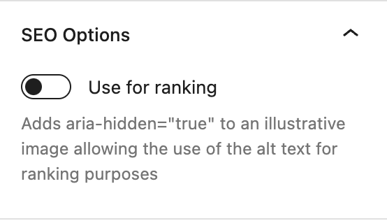
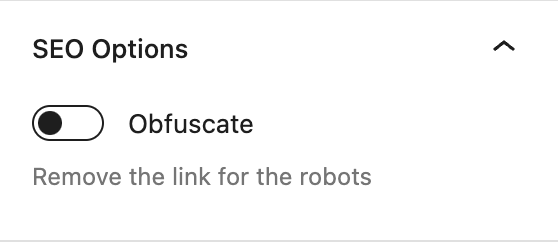
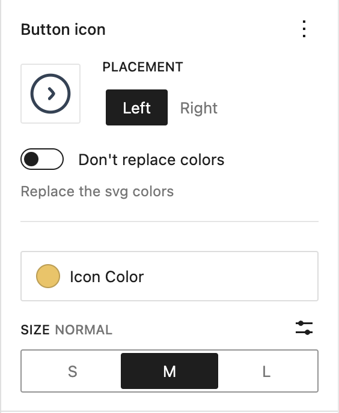
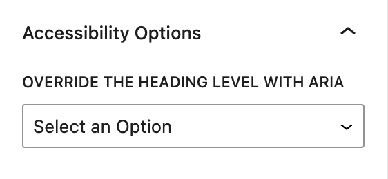

WordPress core blocks, with the options they are missing
Core Blocks Enhancer is a free WordPress plugin that adds accessibility, SEO and performance options to the Gutenberg blocks you already use. No new blocks to learn, nothing changes until you turn an option on.
Each option lives in the sidebar of the block it applies to.
SEOPerformance
Image SEO and lazy loading
Image and Media & Text blocks, "SEO & Performance" panel
Use for ranking adds aria-hidden="true" to an illustrative image, so its alt text can be written for search engines without being read by assistive technologies.
Lazy load, on the Image block, forces loading="lazy" and removes any fetchpriority attribute.

SEO
Link obfuscation
Button and Paragraph blocks, "SEO Options" panel
Removes the links from the markup served to robots. Each href is replaced with a base64 encoded attribute, and a small front script opens the URL on click or on Enter.
Links stay focusable, and Ctrl/Cmd + click opens them in a new tab.
On a paragraph, the option applies to every link it contains.
The front script is disallowed in robots.txt.

DesignAccessibility
Button icons and aria-label
Button block, "Button icon" and "Accessibility" panels
Pick any image from the media library and place it left or right of the button text.
SVG icons are used as a mask, so they can take a color or a gradient from the theme palette. "Don't replace colors" keeps the colors of the file.
Other images are cropped to the icon size, with a 2x version for high density screens.
Size is 16, 24 or 32px, or any custom value.
The gap between icon and text is the --button-gap custom property, 8px by default.
Button label adds an aria-label to the button link.

Accessibility
Aria heading level
Heading block, "Accessibility Options" panel
Overrides the level announced to assistive technologies with role="heading" and aria-level, so a heading can look like an h2 and be announced as an h4.
"None" sets role="presentation" to take the heading out of the document outline.

AccessibilityAutomatic
Accessible table headers
Every <th> of the Table block gets scope="col".
PerformanceAutomatic
Lazy YouTube embeds
The YouTube iframe is replaced with a link showing the video thumbnail. The player is only loaded when the visitor clicks it, so nothing from the YouTube player is downloaded on page load.
Supports youtu.be/ID, youtube.com/watch?v=ID, /embed/ID, /shorts/ID and /live/ID URLs.
On connections slower than 4G, when the browser reports it, a low resolution thumbnail is used and the link opens YouTube in a new tab.
Ctrl/Cmd + click always opens the video on YouTube.
To run something before the player loads, such as asking for consent, define window.onYoutubePlaceholderClick. It receives the click event and must return a promise. The player loads when it resolves, and nothing happens if it rejects.
Setting the lang and dir of a text selection is handled by the core "Language" format since 1.9.0. Content created with the plugin's previous toolbar button keeps its attributes when edited.
Install the WordPress plugin
Requires PHP 7.4 or later. The built files are in the repository, so there is no build step.
With Composer. The package is not on Packagist, so declare the GitHub repository first.
The package type is wordpress-plugin. It lands in your plugins folder if the project uses composer/installers, as Bedrock does, and in vendor/ otherwise.
Or with Git. Clone the plugin into your plugins folder.
cd wp-content/plugins
git clone https://github.com/corentin-gautier/core-blocks-enhancer.git
Activate Core Blocks Enhancer in the Plugins screen.
Open a post and select an image, button, paragraph or heading. The new panels are in the block sidebar.
The robots.txt rule that hides the front script from robots targets /wp-content/plugins/core-blocks-enhancer/. If the plugin is installed elsewhere, as with Bedrock's app/plugins, add your own rule for build/front.min.js.